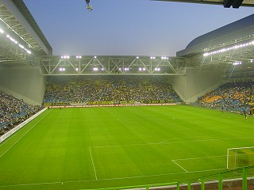

|
Vitesse - Roda JC (1-1) 20 september 2003 |
Het was zwoel in de bus.
200 Rodasupporters wurmden zich door het
tourniquet van ingang Q.

Vanwege het mooie weer kon het dak gelukkig
open blijven.
Veel muziek voor de wedstrijd inclusief het
oersaaie Vitesse-lied.
Vitesse trekt tegenwoordig geen volle zalen meer.
Kujovic bij een van zijn vele reddingen.
Mbamba scoort met een verwoestende omhaal
in de 27e min.
Het SunWeb-team viert feest.
Na vele vele corners scoort Arouna Kone de
gelijkmaker in de 41e min. Een droomdebuut voor
onze linkerspits uit Ivoorkust.
Ole ole, Roda Kerkrade, ole ole....
Snacken in de rust. Eten en drinken mocht niet
mee naar de tribune.

In de tweede helft wordt de falende Berglund
eindelijk vervangen voor Baslanti.
Dit gaf meteen meer dreiging.
He he, vriendschap is een illusie. Yep!
In de slotfase krijgt Addo nog een mooie kans
op een treffer.

Brouwers krijgt een klein tikje van Mbamba en
stort ter aarde waarna de speler uit Kameroen
scoort. De goal wordt terecht afgekeurd.
De spelers komen hun fans bedanken.
Met gemengde gevoelens terug.
Dit Rodameëdsje blijft in elk geval vrolijk, maar
dat komt omdat ze binnenkort op deze site te
bewonderen valt!
Deze meneer heeft troost van een andere schone
nodig om het puntverlies tegen Vitesse te
verwerken.
Door het gelijkspel zakt Roda van de 10e naar de
11e plaats in de ranglijst.
(met dank aan kevin)